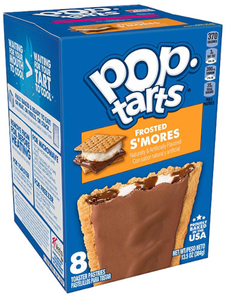

Pop-Tarts

Description
A classic processed-food breakfast! Rectangular-shaped toaster
pastry with a sweet filling sealed inside, usually frosted. The
best flavor is clearly s'mores - any others are obviously inferior.
Ingredients
- 1 package Kellogg's brand Pop-Tarts (preferably s'mores flavor)
Steps
- Open outer cardboad box
- Remove individual Pop-Tarts package
- Open package and remove Pop-Tarts
- (Optional) Toast Pop-Tarts to desired level
- ENJOY!